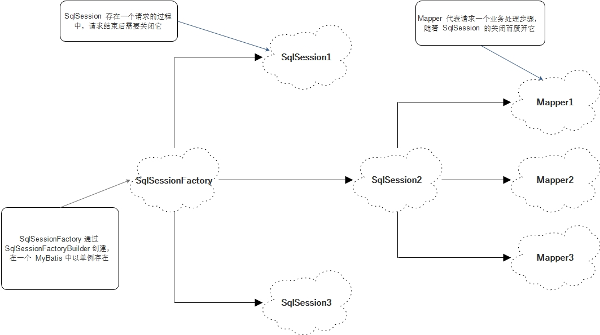

持久层：可以将业务数据存储到磁盘，具备长期存储能力，只要磁盘不损坏（大部分的重要数据都会有相关的备份机制），在断电或者其他情况下，重新启动系统仍然可以读取这些数据。
MyBatis：MyBatis 是一款优秀的持久化框架，它支持定制化 SQL、存储过程以及高级映射，意味着可以更为精确地定位SQL语句，可以对其进行优化和改造，有利于系统性能提高。MyBatis 避免了几乎所有的 JDBC 代码和手动设置参数以及获取结果集。MyBatis 可以使用简单的 XML 或注解来配置和映射原生类型、接口和 Java 的 POJO（Plain Old Java Objects，普通老式 Java 对象）为数据库中的记录。
SqlSessionFactoryBuilder（构造器）：它会根据配置或者代码来生成 SqlSessionFactory ， 采用的是分布构建的 Builder 模式。
SqlSessionFactory（工厂接口）：依靠它来生成 SqlSession ， 使用的是工厂模式。
SqlSession（会话）：一个既可以发送 SQL 执行返回结果，也可以获取 Mapper 的接口。
SQL Mapper（映射器）：它是 MyBatis 新设计的组件， 它是由一个 Java 接口和 XML 文件（或注解）构成的，需要给出对应的 SQL 和映射规则。它负责发送 SQL 语句，并返回结果。
用一张图来展示 MyBatis 核心组件之间的关系，如下图：
掌握 MyBatis 组件的创建及基本应用，是不够的，我们还要了解组件的生命周期。
所谓生命周期就是每一个对象应该存活的时间，比如一些对象一次用完后就要关闭，使它们被 Java 虚拟机（JVM）销毁，以避免继续占用资源，所以我们会根据每一个组件的作用去确定其生命周期。
SqlSessionFactoryBuilder 的作用在于创建 SqlSessionFactory ，创建成功后， SqlSessionFactoryBuilder 就失去了作用，所以它只能存在于创建 SqlSessionFactory 的方法中，而不要让其长期存在。
SqlSessionFactory 可以被认为是一个数据库连接池，它的作用是创建 SqlSession 接口对象。因为 MyBatis 的本质就是 Java 对数据库的操作，所以 SqlSessionFactory 的生命周期存在于整个 MyBatis 的应用之中，所以一旦创建了 SqlSessionFactory ，就要长期保存它，直至不再使用 MyBatis 应用，所以可以认为 SqlSessionFactory 的生命周期就等于 MyBatis 的应用周期。
由于 SqlSessionFactory 是一个对数据库的连接池，所以它占据着数据库的连接资源。如果创建多个 SqlSessionFactory ， 那么就存在多个数据库连接池，这样不利于对数据库资源的控制，也会导致数据库连接资源被消耗完。因此我们把 SqlSessionFactory 作为一个单例，让它在应用中被共享。
如果说 SqlSessionFactory 相当于数据库连接池，那么 SqlSession 就相当于一个数据库连接（Connection 对象），你可以在一个事务里面执行多条 SQL 语句，然后通过它的 commit 、 rollback 等方法，提交或者回滚事务。所以它应该存活在一个业务请求中，处理完整个请求后，应该关闭这条连接，让它归还给 SqlSessionFactory ，否则数据库资源很快就被消耗完，系统瘫痪，所以用 try ... catch ... finally ... 语句来保证其正确关闭。
Mapper 是一个接口，它由 SqlSession 所创建，所以它的最大生命周期至多和 SqlSession 保持一致。 SqlSession 一旦关闭，它的数据库连接资源也会消失，所以它的生命周期应该小于等于 SqlSession 的生命周期。Mapper 代表的是一个请求中的业务处理，所以它应该在一个请求中，一旦处理完了相关的业务，就应该废弃它。
用一张图来描述 MyBatis 核心组件的生命周期，如下图：
